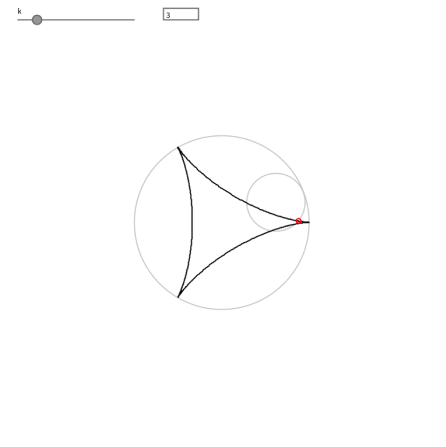
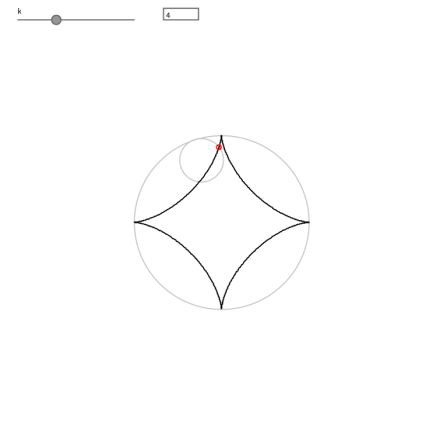
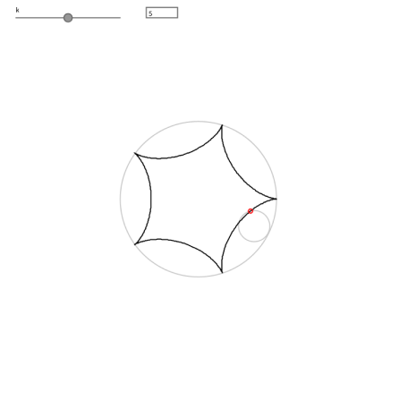
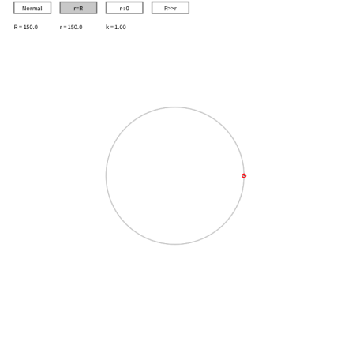
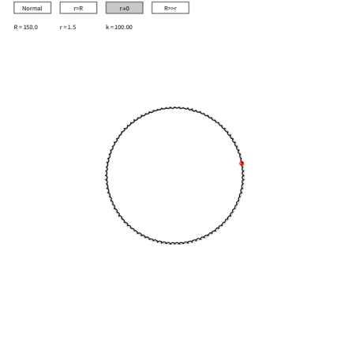
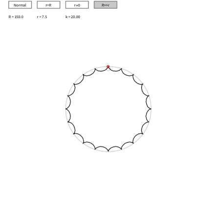

Project Overview
In this coding project, I've developed a generative art inspired by the mathematical beauty of hypocycloids. A hypocycloid is a special curve traced by a point on a small circle that rolls inside a larger circle. I've taken this classical mathematical concept and transformed it into an animated, visualization using Processing.
Mathematical Foundation
The hypocycloid formula that inspired this project is:
R: radius of the fixed circle (outer)
r: radius of the rolling circle (inner)
t: parameter angle [0, 2π]
k = R/r: ratio determining the number of cusps
1. Number of Cusps
▪️The number of cusps (sharp points) in a hypocycloid is determined by k = R/r
▪️When k is an integer, the curve closes after one revolution
▪️The curve has k cusps when R/r is rational
2. Periodicity
▪️The curve is periodic with period 2πr/(R-r)
▪️Complete pattern emerges when t spans [0, 2π]
Interesting...
The rotation matrix applied to each point:
is implemented through Processing's rotate() function:
rotate(angle * frameCount/2);
The Bezier curve implementation uses four control points (P₀, P₁, P₂, P₃) following the equation:
This creates a smooth interpolation between hypocycloid points, adding artistic variation to the mathematical curve.
Parameter Space Analysis
▪️Depending on R/r ratio

k=3 : Deltoid curve (3 cusps)

k=4 : Astroid curve (4 cusps)

k=5 : Five-pointed hypocycloid
▪️Special Cases
First, when the radius of both circles are equal (r = R), we encounter what mathematicians call a "degenerate case." In this situation, the hypocycloid collapses into a single point because the inner circle matches the outer circle's size, preventing any rolling motion. This demonstrates the mathematical boundary condition where the curve loses its typical characteristics.

r=R : Point curve (degenerate case)
The second special case occurs when the inner circle's radius approaches zero (r → 0). In this case, the resulting curve closely approximates a perfect circle. As the inner circle becomes infinitesimally small, it effectively traces a circular path along the inside of the larger circle, creating a near-perfect circular pattern. This case helps us understand how hypocycloids behave at their mathematical limits.

r->0 : Circle approximation
When the outer circle's radius is much larger than the inner circle's radius (R >> r), star-like patterns with multiple cusps form. The ratio between the two radii determines the number of cusps. For example, if the outer radius is ten times the inner radius, the hypocycloid forms a star pattern with ten cusps.

R>>r : Many-cusped star-like patterns
Art works
Starting with four selected points along the hypocycloid curve, these points are then connected using a Bezier curve to create a smooth path. This resulting curve undergoes rotation around the center point, while simultaneously, all points of the smaller (rolling) circle are traced to show their complete trajectories.